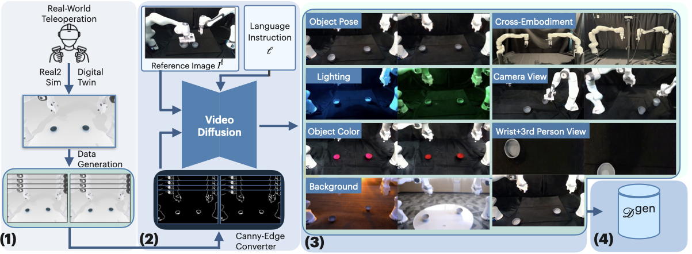

CRAFT turns just a couple of real robot demonstrations into a large, visually diverse training set by generating photorealistic robot videos with a video diffusion model.
Real robot data is expensive to collect and lacks visual variation, so policies struggle under new lighting, backgrounds, object positions, or camera views.
Guide a video diffusion model with canny-edges from simulation to synthesize new, action-labeled demonstrations across six augmentation axes.

Figure 2: CRAFT pipeline. (1) Trajectory Expansion via Real2Sim digital twin. (2) Video Generation with Canny-edge conditioning. (3) Augmented Dataset Construction across six axes. (4) Generated Dataset for policy training.
Retain too much low-level detail, causing the diffusion model to struggle with salient structural features such as gripper-object contact.
Discard irrelevant details while preserving robot arm and object structure, giving clear guidance and allowing free variation of backgrounds, object colors, and lighting through prompting.
The video above was produced by the video generation model using the language instruction below (together with Canny-edge control).
Overhead shot with balanced, even lighting. Neutral background with clear illumination across the task area. Background curtains and the table are completely stationary, no movement, swaying, or wind; they stay frozen like a photograph for the whole video. The background and table fabrics remain perfectly static while only the robot arms move.
Two white industrial robotic arms with visible structural detail are positioned symmetrically. Two light-colored shallow gray bowls are clearly visible on the dark fabric surface with defined edges.
Critical: The robotic grippers make firm, realistic contact with the bowl edges. Fingers wrap securely around the bowl rims with no gaps or floating. Use natural grasping mechanics with proper finger placement and a stable grip through the full motion. Physical contact stays consistent with no slipping or separation between gripper and bowl.
The scene has well-balanced lighting so robot arms, bowls, and surface read clearly, with natural contrast. Avoid harsh shadows or blown highlights. Aim for a clean, professional look with enough light to follow the action, sharp focus on the manipulation task.
Only the robot arms and bowls move, curtains, fabric, and other background elements stay motionless for the entire sequence. 4K quality.
Generate photorealistic, action-consistent robot videos from simulator rollouts using a pre-trained diffusion model.
Train ACT on real + generated demonstrations and evaluate robustness under controlled distribution shifts.
Coordinated bimanual task where both arms simultaneously grasp and lift.
Parallel task where both arms independently pick up cans and place them into a container.
Sequential task where two bowls must be stacked on top of each other in order.
Success rates (%). Each method evaluated under test conditions varying only along that dimension. CRAFT (Ours) uses 1000 generated demos + real-world collected demos. Cross-Embodiment: xArm7 → Franka Panda transfer.
Policy rollouts on physical hardware for each augmentation type. Policies are trained with CRAFT-generated data and evaluated under the corresponding test condition.
Rollouts shown for three tasks (Stack Two Bowls, Lift Roller, Place Cans In Plasticbox) under each real-world augmentation setting.
For each trajectory, the simulator applies random translations and rotations to the target object's pose, sampled from a uniform distribution over the physically feasible workspace.
We generate diverse lighting conditions by prompting Veo3 to synthesize variants of the reference image under different ambient illumination (e.g., blue or green lighting). Unlike simple color jitter, this preserves scene properties like shadows and surface reflections.
To generate diverse object colors, the model conditions on a reference image of the empty table scene, allowing the language instruction to freely specify the desired color while Canny-edge control provides object contours and location.
To generate diverse backgrounds, we omit the reference image from the video diffusion model, conditioning on it would anchor the generated scene to the original environment. Instead, we modify the language instruction to describe the desired background.
We enable cross-embodiment transfer by retargeting source-robot demonstrations to a target robot using forward and inverse kinematics, mapping end-effector poses to new joint configurations while preserving gripper actions. In our setup the source robot is the xArm7 and the target is the Franka Panda; we generate photorealistic videos for the target robot only, so xArm7 source demonstrations are not shown here. We plan to add videos of the real-world xArm7 demonstrations in a future update.
We tile the left wrist camera, right wrist camera, and third-person (external) camera into a single image. Tiling ensures spatial consistency across all viewpoints, enabling multi-view policy training without collecting real wrist-camera data.
Additional stress tests of our video generation: generation beyond the Franka platform, with object distractors, and with different reference images. Click a tab to view each category.
Examples of video generation beyond the default Franka setup: different robot arms (e.g. single-arm xArm7), backgrounds, and object appearances, alongside the original generation for comparison.
Single arm xArm7 with ocean background.
Pink generation object.
Original generation.
@inproceedings{chen2026craft,
title={{CRAFT: Video Diffusion for Bimanual Robot Data Generation}},
author={Jason Chen and I-Chun Arthur Liu and Gaurav Sukhatme and Daniel Seita},
booktitle={International Conference on Intelligent Robots and Systems (IROS)},
Year={2026}
}
Scanning clips…
Media keeps loading in the background as you scroll. You can close this anytime.